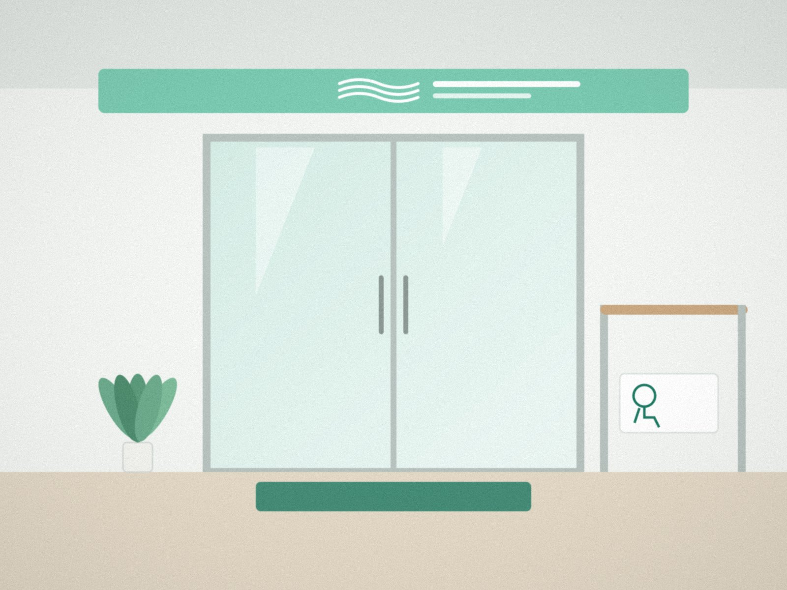
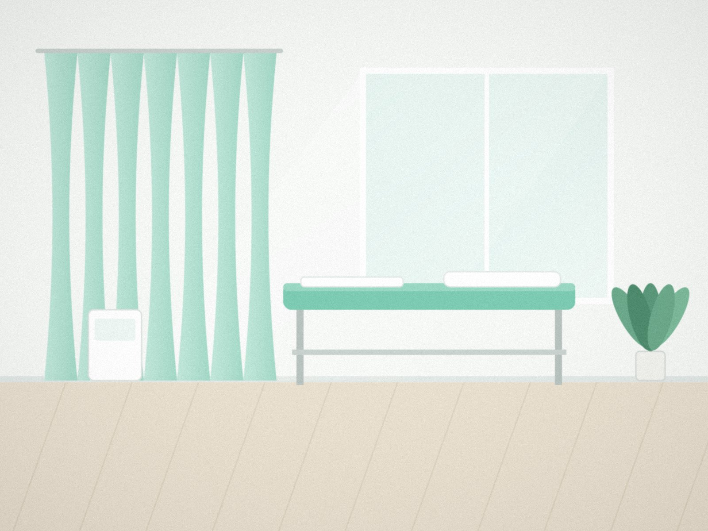
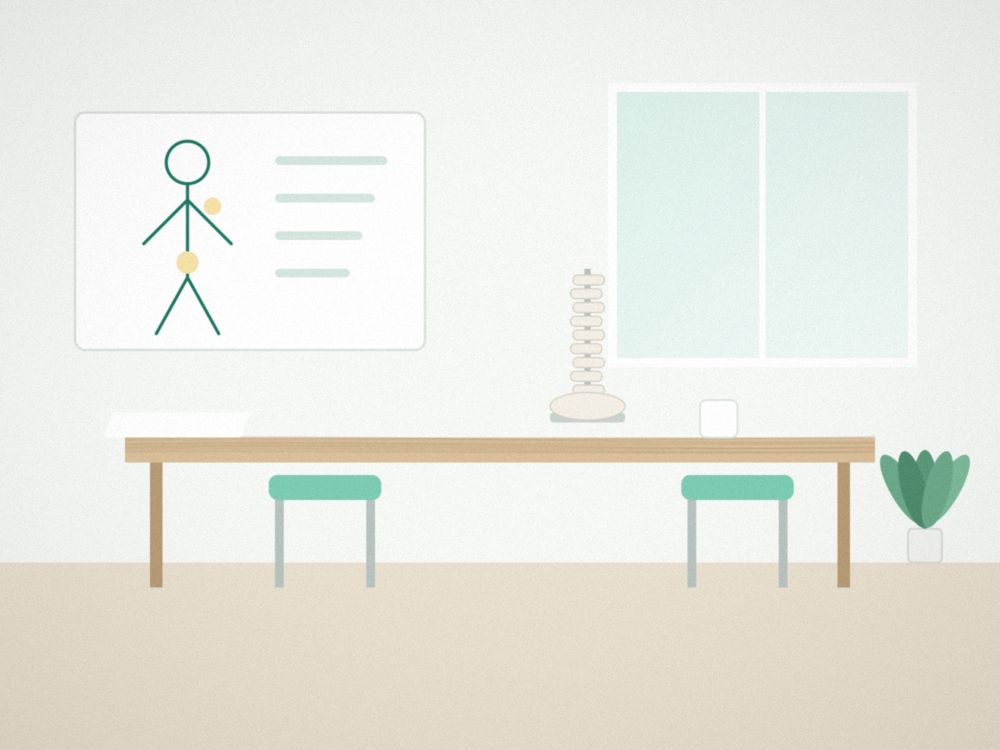
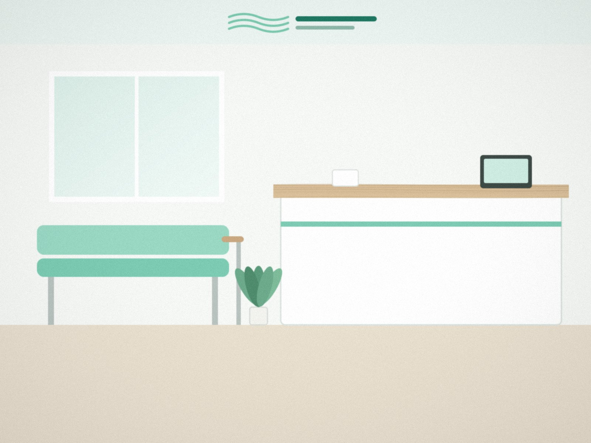
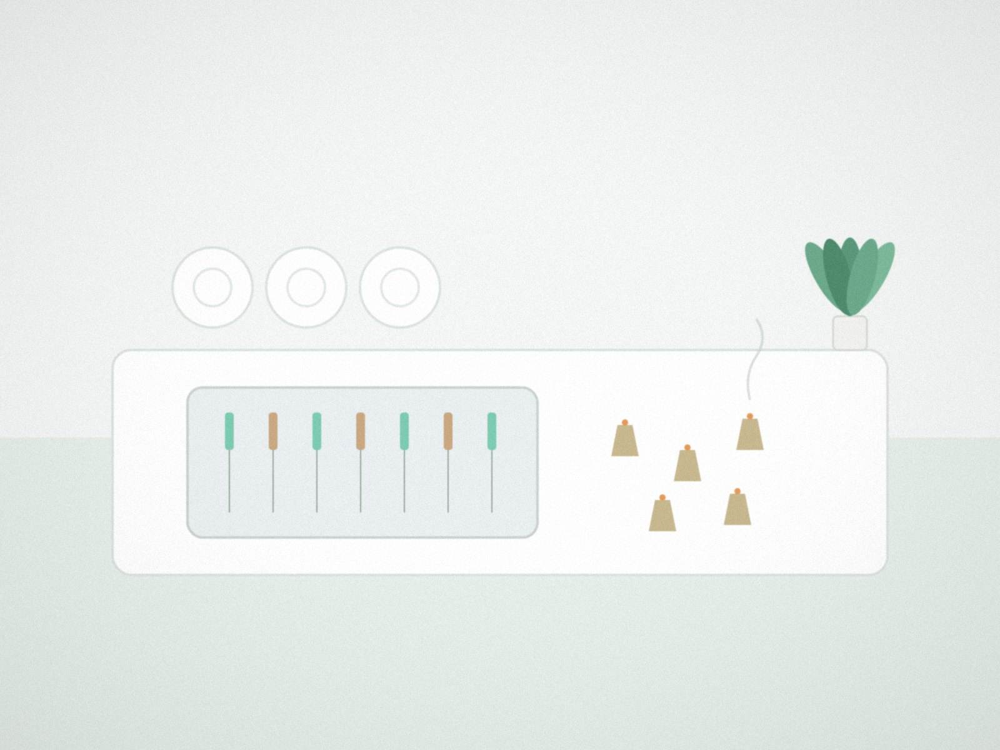
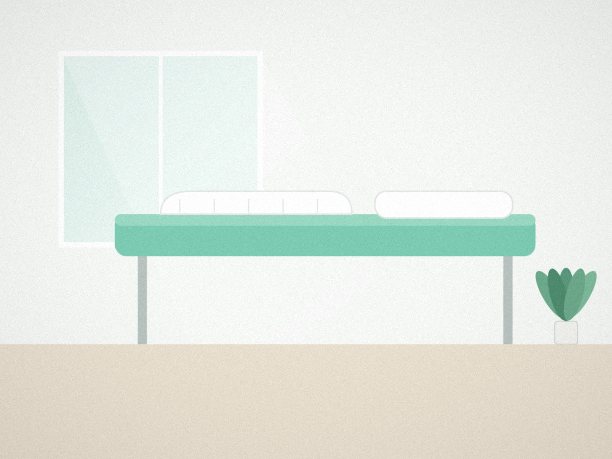
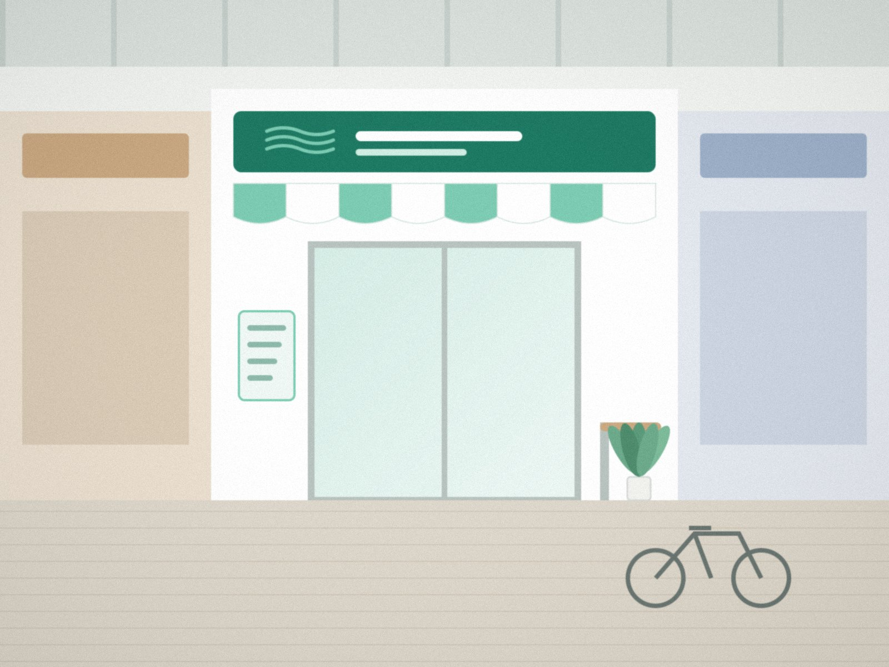

01
段差のない入口と手すり
車いすやつえでも、そのままお入りいただけます。待合も車いすのままお過ごしいただけます。
駅前商店街の整骨院・鍼灸院です。
肩・腰・ひざの痛みや、けがのご相談を承ります。
みどり台駅 南口から徒歩3分・商店街の中ほど

HOURS
| 受付時間 | 月 | 火 | 水 | 木 | 金 | 土 | 日・祝 |
|---|---|---|---|---|---|---|---|
| 午前 9:00〜12:30 | ○ | ○ | ○ | ○ | ○ | ○ | 休 |
| 午後 15:00〜19:30 | ○ | ○ | ○ | 休 | ○ | ▲(14:00まで) | 休 |
| 曜日 | 午前9:00〜12:30 | 午後15:00〜19:30 |
|---|---|---|
| 月 | ○ | ○ |
| 火 | ○ | ○ |
| 水 | ○ | ○ |
| 木 | ○ | 休 |
| 金 | ○ | ○ |
| 土 | ○ | 14:00まで |
| 日・祝 | 休 | 休 |
休診日:木曜午後・日曜・祝日
土曜は 9:00〜14:00
SYMPTOMS
どこに相談すればいいか分からない痛みも、まずはお気軽にご相談ください。
FEATURES

車いすやつえでも、そのままお入りいただけます。待合も車いすのままお過ごしいただけます。

施術の前に、体の状態と施術の内容をわかりやすくお話しします。

ネットとお電話で予約できます。ご家族の付き添いも歓迎です。
FIRST VISIT
お持ちいただくもの
保険証(マイナ保険証)・お薬手帳(お持ちの方)
MENU
ねんざ・打撲・肉ばなれなどのけがに。保険証をお持ちください。

細い使い捨ての鍼を使います。刺さない鍼やお灸もあります。

慢性的な肩こりや腰の張りに。30分から受けられます。

ACCESS
そよかぜ整骨院・鍼灸院